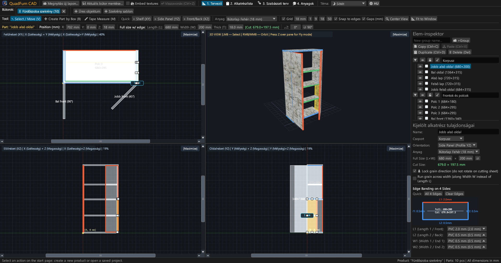
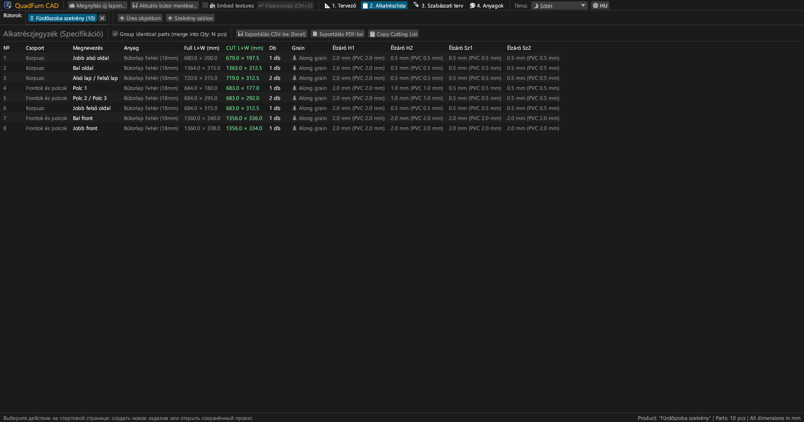
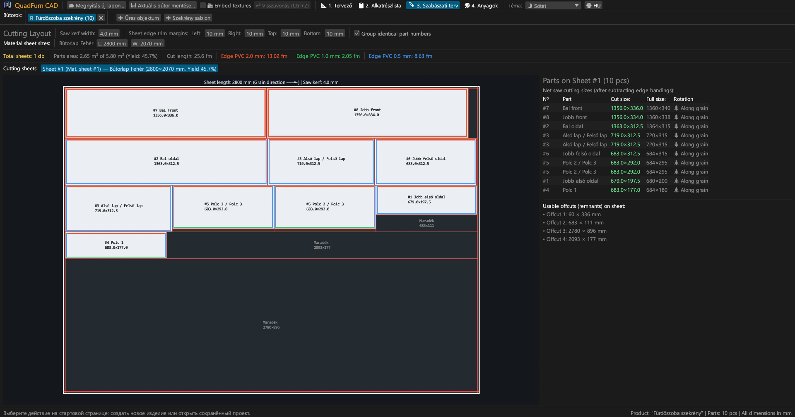
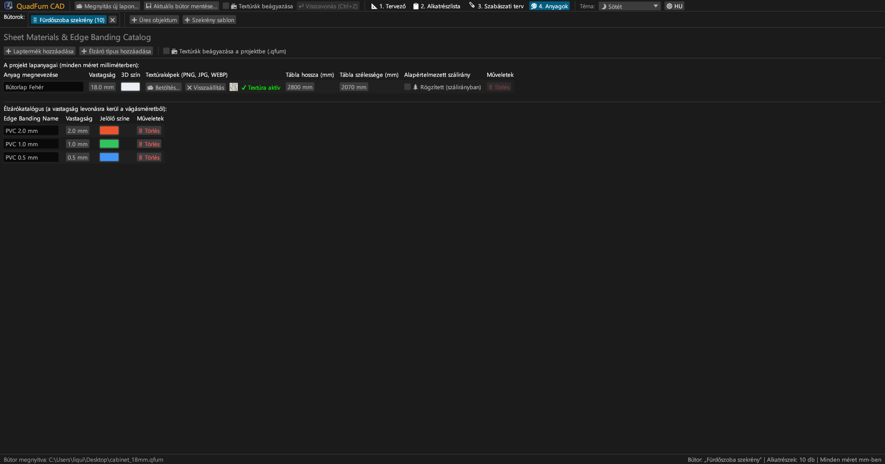
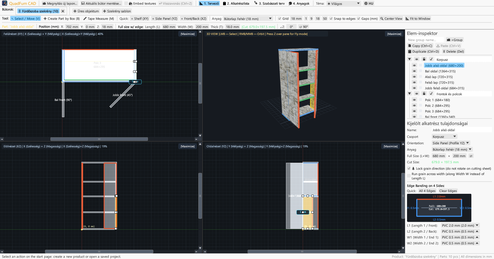
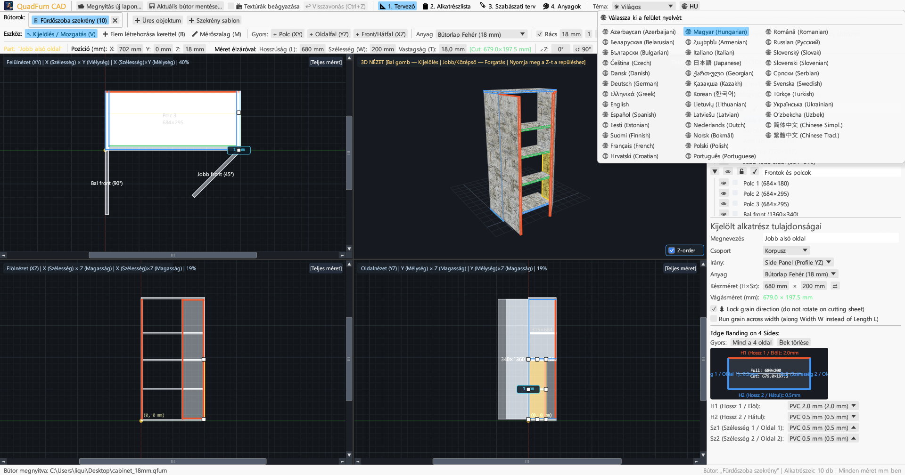

Gyors CAD asztalosoknak és bútorgyártóknak. 4 nézetes szinkronizált modellezés, képletbeviteli méretezés, élzárás-levonás és lapszabászat.

Összekapcsolja a 4 nézetes rajzolást, a numerikus vezérlést és a szabásterv-optimalizálást.
Egyidejű szerkesztés Felülnézetben (XY), Elölnézetben (XZ), Oldalnézetben (YZ) és 3D-ben mágneses illesztéssel.
Koordináták (X, Y, Z), méretek (H × SZ × V) és szög közvetlen megadása beépített számológéppel (pl. 600-4).
PVC/ABS élzárók (0,4–2,0 mm) rendelése a 4 élhez a lapszabász fűrész pontos vágásméreteinek kiszámításához.
Szálirányt, fűrészlap-vastagságot (4,0 mm), szélezést és hasznos hulladékot kezelő szabászgép-optimalizáló.
Párhuzamos munka több bútoron fülekben. Elemek másolása és beillesztése anyagátvitellel.
Nyomtatásra kész A4 Fekvő formátum: alkatrészlista, 4 nézetes rajzok, szabástervek és anyagkimutatás +15 % ráhagyással.





Önálló futtatható fájlok külső függőségek nélkül.
Hordozható fájl ikonnal, nem igényel telepítést.
sudo apt install ./quadfurn_0.2.6_amd64.deb
Univerzális alkalmazáscsomag Apple Silicon és Intel x86_64 gépekre.
| Billentyű | Művelet | Hatókör |
|---|---|---|
| V | Kijelölő / Mozgató eszköz (8 fogantyú, keretes kijelölés) | 2D nézetek |
| B | Elem létrehozása kerettel az aktív síkban | 2D nézetek |
| M | Mérőszalag (pontos távolságmérés milliméterben) | 2D nézetek |
| Z | Belső nézetes repülés (WASD) | 3D ablak |
| ← → ↑ ↓ | Elemek mozgatása rács-lépésközzel (Shift: dupla lépés) | 2D nézetek |
| Ctrl + C / V | Elemek másolása / beillesztése (fülek között) | Minden fül |
| Ctrl + D | Kijelölt elemek duplázása eltolással | Aktív projekt |
| Ctrl + S | Projekt mentése .qfurn / .json fájlba | Aktív projekt |
| Ctrl + Z | Visszavonás (akár 40 előzmény-lépés) | Aktív projekt |
| Delete / Backspace | Kijelölt elemek törlése | Aktív projekt |